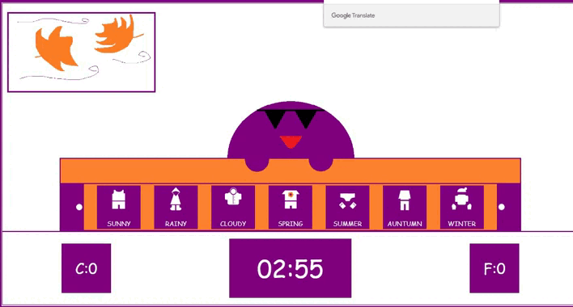

Tengo mucha ropa como para toda la vida, de todos los tipos de ropa que existen, pero solo utilizo la ropa adecuada de acuerdo al clima y la estacion porque no toda la ropa esta hecha para todo
Vas a mirar en la ventana y luego escoje la ropa correcta dentro del closet
En el libro esta solo el nombre de las estaciones pero de la ropa tendras que saber
CONSEJOS
Practica varias veces hasta que lo logres

Hay temas en el idioma inglés que son fundamentales para mantener cualquier conversación y las estaciones del año es uno de ellos.
Tanto por si quieres lucirte en tu viaje de vacaciones de verano diciendo "Let's go to the beach", como si tienes que pedir la ropa adecuada para la temporada de invierno a un nativo. Este tipo de vocabulario en inglés es útil en cualquier parte del mundo.